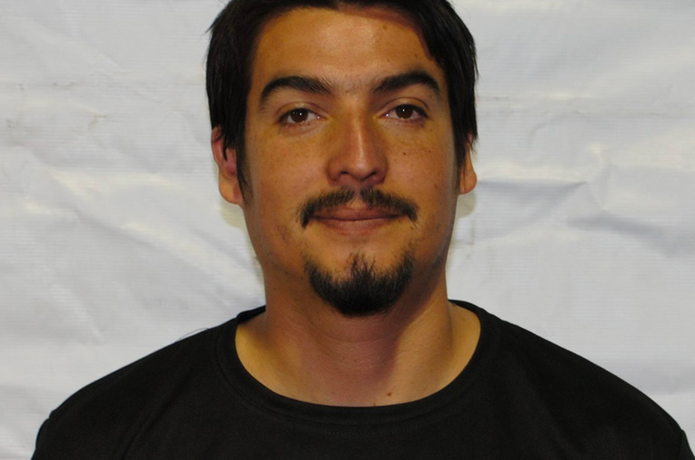
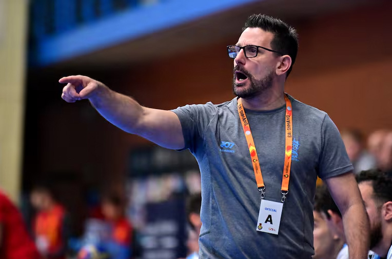
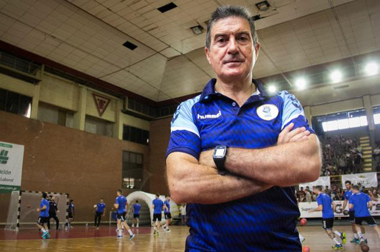
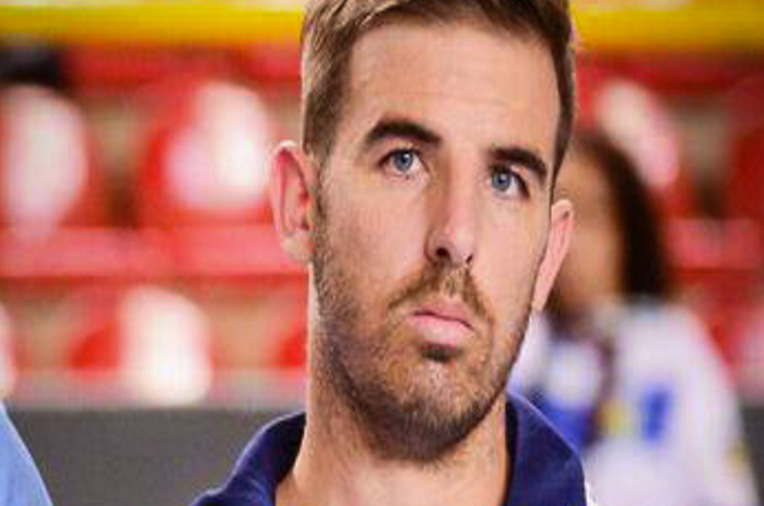
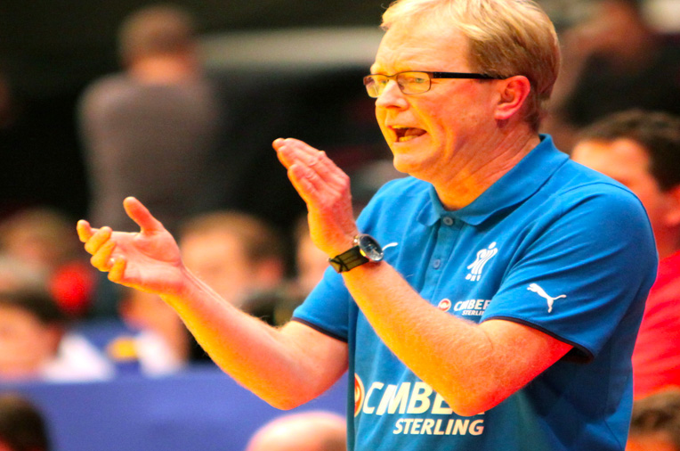

Entrenadores

Elizardo Vera Flores
Categoría: Entrenador Equipos Femeninos
Académico: Profesor de Educación Física Universidad Andrés Bello.
Técnico Deportivo de Balonmano Nivel I, Real Federación Española de Balonmano
Profesional:Porfesor Deportes Colectivos Instituto AIEP Entrenador Balonmano CER femenino Región Metropolitana
Experiencia: Entrenador CBR Femenino RM
Historial: Jugador DPV Kutral desde 2007, Mundialista Hungría y Macedonia

Fernando Jopia Zavala
Categoría: Juvenil Varones
Académico: Profesor de Educación Física, Deportes y Recreación de la Universidad Mayor.
Magister en Motricidad Infantil de la Universidad Mayor
Técnico Deportivo de Balonmano Nivel I, Ferderación Chilena de Balonmano
Profesional: Entrenador de Balonmano Colegio Alicante de la Florida
Experiencia: Entrenador CBR Femenino RM
Historial: Jugador del Club DPV Kutral desde el año 2009
Seleccionado Nacional en los años 2008 a 2010

Leonel Rivera Vera
Categoría: Juvenil Varones
Académico: Profesor de Educación Física, Universidad Andrés Bello
Profesional: Técnico Deportivo Nivel I, Real Federación Española de Balonmano
Experiencia: Entrenador CBR Femenino RM
Historial: Jugador DPV Kutral desde 2007, Mundialista Hungría y Macedonia

Camilo Martinez Valverde
Categoría:Entrenador Escuela Balonmano
Académico: Profesor de Educación Física de la Universidad Mayor.
Magister en Entrenamiento Deportivo de la Universidad Mayor
Profesional: Preparador Físico Ayudante de Club Deportes La Serena
Preparador Físico del plantel profesional y del área formativa de Rangers de Talca
Preparador Físico y Asesor de futbolistas como Gustavo Canales, Yerson Opazo, Lorenzo Faravelli, Oscar Hernández
Preparador Físico de deportistas de Artes Marciales Mixtas en Club Black House Santiago

Manuel Cortez San Martín
Categoría: Entrenador Categoría Infantil y Cadete Varones
Académico: Profesor de Educación Física, Universidad Andrés Bello
Profesional: Técnico Deportivo Nivel I, Real Federación Española de Balonmano
Experiencia: Entrenador CBR Femenino RM
Historial: Jugador DPV Kutral desde 2007, Mundialista Hungría y Macedonia